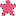

<!doctype html>
<html lang="en">
    <head>
        <meta charset="utf-8">
        <meta http-equiv="X-UA-Compatible" content="IE=edge">
        <meta name="viewport" content="initial-scale=1,user-scalable=no,maximum-scale=1,width=device-width">
        <meta name="mobile-web-app-capable" content="yes">
        <meta name="apple-mobile-web-app-capable" content="yes">
        <link rel="stylesheet" href="css/leaflet.css">
        <link rel="stylesheet" href="css/qgis2web.css"><link rel="stylesheet" href="css/fontawesome-all.min.css">
        <link rel="stylesheet" href="css/MarkerCluster.css">
        <link rel="stylesheet" href="css/MarkerCluster.Default.css">
        <style>
        html, body, #map {
            width: 100%;
            height: 100%;
            padding: 0;
            margin: 0;
        }
        </style>
        <title></title>
    </head>
    <body>
        <div id="map">
        </div>
        <script src="js/qgis2web_expressions.js"></script>
        <script src="js/leaflet.js"></script>
        <script src="js/leaflet-svg-shape-markers.min.js"></script>
        <script src="js/leaflet.rotatedMarker.js"></script>
        <script src="js/leaflet.pattern.js"></script>
        <script src="js/leaflet-hash.js"></script>
        <script src="js/Autolinker.min.js"></script>
        <script src="js/rbush.min.js"></script>
        <script src="js/labelgun.min.js"></script>
        <script src="js/labels.js"></script>
        <script src="js/leaflet.markercluster.js"></script>
        <script src="data/AwardPlaces_1.js"></script>
        <script src="data/Festivals_2.js"></script>
        <script>
        var map = L.map('map', {
            zoomControl:true, maxZoom:28, minZoom:1
        })
        var hash = new L.Hash(map);
        map.attributionControl.setPrefix('<a href="https://github.com/tomchadwin/qgis2web" target="_blank">qgis2web</a> &middot; <a href="https://leafletjs.com" title="A JS library for interactive maps">Leaflet</a> &middot; <a href="https://qgis.org">QGIS</a>');
        var autolinker = new Autolinker({truncate: {length: 30, location: 'smart'}});
        var bounds_group = new L.featureGroup([]);
        function setBounds() {
            if (bounds_group.getLayers().length) {
                map.fitBounds(bounds_group.getBounds());
            }
        }
        map.createPane('pane_GoogleMaps_0');
        map.getPane('pane_GoogleMaps_0').style.zIndex = 400;
        var layer_GoogleMaps_0 = L.tileLayer('https://mt1.google.com/vt/lyrs=m&x={x}&y={y}&z={z}', {
            pane: 'pane_GoogleMaps_0',
            opacity: 1.0,
            attribution: '',
            minZoom: 1,
            maxZoom: 28,
            minNativeZoom: 0,
            maxNativeZoom: 19
        });
        layer_GoogleMaps_0;
        map.addLayer(layer_GoogleMaps_0);
        function pop_AwardPlaces_1(feature, layer) {
            var popupContent = '<table>\
                    <tr>\
                        <td colspan="2"><strong>Award name</strong><br />' + (feature.properties['Award name'] !== null ? autolinker.link(feature.properties['Award name'].toLocaleString()) : '') + '</td>\
                    </tr>\
                    <tr>\
                        <td colspan="2"><strong>Place</strong><br />' + (feature.properties['Place'] !== null ? autolinker.link(feature.properties['Place'].toLocaleString()) : '') + '</td>\
                    </tr>\
                    <tr>\
                        <td colspan="2"><strong>Date</strong><br />' + (feature.properties['Date'] !== null ? autolinker.link(feature.properties['Date'].toLocaleString()) : '') + '</td>\
                    </tr>\
                    <tr>\
                        <td colspan="2">' + (feature.properties['url_1'] !== null ? autolinker.link(feature.properties['url_1'].toLocaleString()) : '') + '</td>\
                    </tr>\
                </table>';
            layer.bindPopup(popupContent, {maxHeight: 400});
        }

        function style_AwardPlaces_1_0() {
            return {
                pane: 'pane_AwardPlaces_1',
                radius: 10.0,
                opacity: 1,
                color: 'rgba(35,35,35,1.0)',
                dashArray: '1,5',
                lineCap: 'butt',
                lineJoin: 'miter',
                weight: 1,
                fill: true,
                fillOpacity: 1,
                fillColor: 'rgba(232,89,125,1.0)',
                interactive: true,
            }
        }
        map.createPane('pane_AwardPlaces_1');
        map.getPane('pane_AwardPlaces_1').style.zIndex = 401;
        map.getPane('pane_AwardPlaces_1').style['mix-blend-mode'] = 'normal';
        var layer_AwardPlaces_1 = new L.geoJson(json_AwardPlaces_1, {
            attribution: '',
            interactive: true,
            dataVar: 'json_AwardPlaces_1',
            layerName: 'layer_AwardPlaces_1',
            pane: 'pane_AwardPlaces_1',
            onEachFeature: pop_AwardPlaces_1,
            pointToLayer: function (feature, latlng) {
                var context = {
                    feature: feature,
                    variables: {}
                };
                return L.shapeMarker(latlng, style_AwardPlaces_1_0(feature));
            },
        });
        var cluster_AwardPlaces_1 = new L.MarkerClusterGroup({showCoverageOnHover: false,
            spiderfyDistanceMultiplier: 2});
        cluster_AwardPlaces_1.addLayer(layer_AwardPlaces_1);

        bounds_group.addLayer(layer_AwardPlaces_1);
        cluster_AwardPlaces_1.addTo(map);
        function pop_Festivals_2(feature, layer) {
            var popupContent = '<table>\
                    <tr>\
                        <td colspan="2">' + (feature.properties['id'] !== null ? autolinker.link(feature.properties['id'].toLocaleString()) : '') + '</td>\
                    </tr>\
                    <tr>\
                        <td colspan="2"><strong>Festivals</strong><br />' + (feature.properties['Festivals'] !== null ? autolinker.link(feature.properties['Festivals'].toLocaleString()) : '') + '</td>\
                    </tr>\
                    <tr>\
                        <td colspan="2"><strong>Place</strong><br />' + (feature.properties['Place'] !== null ? autolinker.link(feature.properties['Place'].toLocaleString()) : '') + '</td>\
                    </tr>\
                    <tr>\
                        <td colspan="2"><strong>Date</strong><br />' + (feature.properties['Date'] !== null ? autolinker.link(feature.properties['Date'].toLocaleString()) : '') + '</td>\
                    </tr>\
                    <tr>\
                        <td colspan="2">' + (feature.properties['url'] !== null ? autolinker.link(feature.properties['url'].toLocaleString()) : '') + '</td>\
                    </tr>\
                </table>';
            layer.bindPopup(popupContent, {maxHeight: 400});
        }

        function style_Festivals_2_0() {
            return {
                pane: 'pane_Festivals_2',
                radius: 10.0,
                opacity: 1,
                color: 'rgba(35,35,35,1.0)',
                dashArray: '10,5',
                lineCap: 'butt',
                lineJoin: 'miter',
                weight: 1,
                fill: true,
                fillOpacity: 1,
                fillColor: 'rgba(196,125,213,1.0)',
                interactive: true,
            }
        }
        map.createPane('pane_Festivals_2');
        map.getPane('pane_Festivals_2').style.zIndex = 402;
        map.getPane('pane_Festivals_2').style['mix-blend-mode'] = 'normal';
        var layer_Festivals_2 = new L.geoJson(json_Festivals_2, {
            attribution: '',
            interactive: true,
            dataVar: 'json_Festivals_2',
            layerName: 'layer_Festivals_2',
            pane: 'pane_Festivals_2',
            onEachFeature: pop_Festivals_2,
            pointToLayer: function (feature, latlng) {
                var context = {
                    feature: feature,
                    variables: {}
                };
                return L.shapeMarker(latlng, style_Festivals_2_0(feature));
            },
        });
        bounds_group.addLayer(layer_Festivals_2);
        map.addLayer(layer_Festivals_2);
        var baseMaps = {};
        L.control.layers(baseMaps,{' Festivals': layer_Festivals_2,' Award Places': cluster_AwardPlaces_1,"Google Maps": layer_GoogleMaps_0,},{collapsed:false}).addTo(map);
        setBounds();
        </script>
    </body>
</html>
